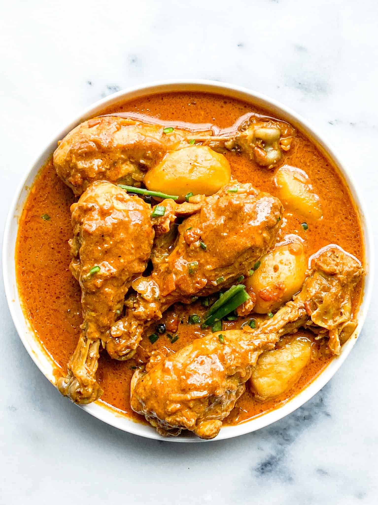

Chicken Curry

Description
Chicken curry is a popular dish in many south asian households. It is a dish made by
using many different spices together to make a delicious and flavorful dish that everyone
can eat.
Ingredients
- 8 pieces leg and thigh
- One Onion, thinly sliced
- Red chilli powder
- Turmeric
- elachi, cinnamon, bay leaves (garam masala)
- one tomato, cut into 8 chunks
- two pumps of oil
- 5 pieces of green chilli
- zeera powder (cumin)
- duniya powder
Steps
- First cut and clean the chicken so its ready for cooking
- Warm the oil on the stove and then dump all the onions in until golden
- put in the garam masala stuff
- Then put in the clean chicken
- put about a tablespoon or more of red chilli powder
- put half a table spoon of turmeric
- put in a full spoon of duniya
- put a half spoon of geera
- mix mix mix
- put in the tomato chunks
- when it seems like the water is low, add a cup of water. but only after it becomes really low
- mix. once the water level seems to be going down again, add the green chillis after slicing them down the middle
and then once the water level is around the amount of curry you want. turn it off.